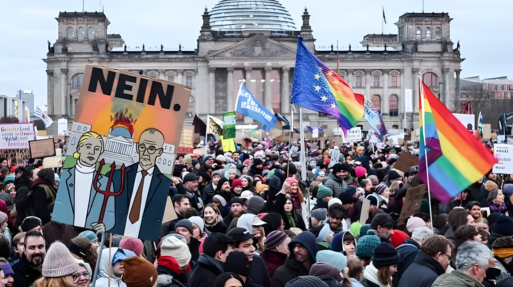

Samedi 12 septembre 2026, environ 150 000 personnes ont défilé dans une vingtaine de villes allemandes, dont Berlin, Hambourg et Munich, pour réclamer l'interdiction du parti d'extrême droite Alternative für Deutschland (AfD), quelques jours après sa large victoire aux élections régionales de Saxe-Anhalt. Organisée à l'appel de la campagne Prüf et du groupe Campact, cette mobilisation nationale illustre l'inquiétude d'une partie de la société civile face à la progression électorale de l'AfD, tandis que le parti tenait de son côté une contre-manifestation à Berlin.
Une semaine après la victoire de l'AfD aux élections régionales de Saxe-Anhalt, où le parti a recueilli près de 44 % des voix le 6 septembre, des dizaines de milliers d'Allemands sont descendus dans la rue le samedi 12 septembre pour dénoncer la progression de l'extrême droite. Selon les organisateurs, quelque 150 000 personnes ont participé à des rassemblements dans une vingtaine de villes du pays, un niveau de mobilisation qui rappelle les grandes marches anti-AfD de janvier 2024.
À Berlin, plusieurs milliers de manifestants ont défilé lors de différents rassemblements organisés dans la capitale, selon la police, tandis que l'AfD y tenait au même moment une contre-manifestation en présence de Kristin Brinker, sa tête de liste pour les élections régionales berlinoises du 20 septembre 2026. Selon le groupe Campact, environ 25 000 personnes ont défilé à Hambourg et 12 000 à Munich.
L'AfD remporte les élections régionales de Saxe-Anhalt avec près de 44 % des voix, loin devant la CDU du chancelier Friedrich Merz.
Ulrich Siegmund revendique une victoire « historique » ; Friedrich Merz affirme ne pas vouloir renoncer à ses réformes malgré la débâcle de son parti.
Environ 150 000 personnes manifestent dans une vingtaine de villes allemandes à l'appel de Prüf et Campact pour réclamer l'interdiction de l'AfD.
L'AfD organise une contre-manifestation dans la capitale, en présence de sa tête de liste régionale Kristin Brinker.
Deux nouvelles élections régionales sont prévues à Berlin et en Mecklembourg-Poméranie-occidentale, où l'AfD est également donnée en tête des sondages.
Dans les cortèges, les manifestants brandissaient des pancartes proclamant « Interdisez l'AfD maintenant » ou « La démocratie n'a pas besoin d'alternatives ». Pour les organisateurs, cette journée de mobilisation traduit l'inquiétude d'une partie de la population face à un parti que la justice allemande considère, dans plusieurs de ses fédérations régionales, comme suspecté d'extrémisme.
| Acteur | Position |
|---|---|
| Prüf | Campagne organisatrice, plaide pour une procédure d'interdiction de l'AfD |
| Campact | Groupe de campagne co-organisateur, comptabilise les cortèges |
| Christoph Bautz | Directeur de Campact, dénonce « les ennemis de la Constitution » |
| Kristin Brinker | Tête de liste AfD à Berlin, présente à la contre-manifestation |
| Friedrich Merz | Chancelier fédéral, jusqu'ici réticent à une procédure d'interdiction |
| Ulrich Siegmund | Chef de l'AfD en Saxe-Anhalt, revendique une victoire « historique » |
« Un large pan de la société civile descend dans la rue pour empêcher les ennemis de la Constitution d'accéder au pouvoir. »
— Christoph Bautz, directeur de Campact, 12 septembre 2026Cette mobilisation intervient alors que le chancelier Friedrich Merz sort tout juste affaibli du scrutin de Saxe-Anhalt, où sa CDU a perdu près de vingt points par rapport à 2021. Les manifestations du 12 septembre ajoutent une pression politique supplémentaire à l'approche des élections régionales du 20 septembre à Berlin et en Mecklembourg-Poméranie-occidentale, deux scrutins où l'AfD est également créditée de bons résultats dans les sondages.
Le contraste est frappant : jamais l'AfD n'a semblé aussi proche du pouvoir dans un Land allemand, et jamais la mobilisation contre elle n'a paru aussi large depuis les grandes marches de janvier 2024. Ces deux dynamiques ne s'annulent pourtant pas : la rue peut peser sur le débat public sans infléchir, à elle seule, un rapport de force électoral que confirment scrutin après scrutin les urnes de l'est du pays. À une semaine des élections de Berlin et du Mecklembourg-Poméranie-occidentale, cette journée de manifestations pose moins la question de l'issue du 20 septembre que celle, plus durable, des outils dont dispose la démocratie allemande pour répondre à la progression de l'AfD : le cordon sanitaire des partis, la voie judiciaire d'une interdiction, ou la seule confrontation par les urnes.
Am Samstag, den 12. September 2026, gingen rund 150.000 Menschen in etwa 20 deutschen Städten, darunter Berlin, Hamburg und München, auf die Straße, um ein Verbot der rechtsextremen Partei Alternative für Deutschland (AfD) zu fordern – wenige Tage nach deren deutlichem Sieg bei der Landtagswahl in Sachsen-Anhalt. Die von der Kampagne Prüf und der Organisation Campact aufgerufene bundesweite Mobilisierung zeigt die Sorge eines Teils der Zivilgesellschaft angesichts des Wahlerfolgs der AfD, während die Partei zeitgleich eine Gegenkundgebung in Berlin abhielt.
Eine Woche nach dem Sieg der AfD bei der Landtagswahl in Sachsen-Anhalt, wo die Partei am 6. September rund 44 Prozent der Stimmen erhielt, gingen am Samstag, den 12. September, Zehntausende Deutsche auf die Straße, um gegen den Aufstieg der extremen Rechten zu protestieren. Nach Angaben der Veranstalter nahmen rund 150.000 Menschen an Kundgebungen in etwa 20 Städten des Landes teil – ein Mobilisierungsniveau, das an die großen Anti-AfD-Demonstrationen vom Januar 2024 erinnert.
In Berlin demonstrierten laut Polizei mehrere Tausend Menschen bei verschiedenen Kundgebungen in der Hauptstadt, während die AfD zur gleichen Zeit eine Gegenkundgebung abhielt, an der Kristin Brinker, ihre Spitzenkandidatin für die Berliner Landtagswahl am 20. September 2026, teilnahm. Laut Campact demonstrierten rund 25.000 Menschen in Hamburg und 12.000 in München.
Die AfD gewinnt die Landtagswahl in Sachsen-Anhalt mit knapp 44 Prozent der Stimmen, weit vor der CDU von Kanzler Friedrich Merz.
Ulrich Siegmund reklamiert einen „historischen" Sieg; Friedrich Merz erklärt trotz der Niederlage seiner Partei, an seinen Reformen festhalten zu wollen.
Rund 150.000 Menschen demonstrieren in etwa 20 deutschen Städten auf Aufruf von Prüf und Campact für ein AfD-Verbot.
Die AfD organisiert in der Hauptstadt eine Gegenkundgebung, an der ihre Landesspitzenkandidatin Kristin Brinker teilnimmt.
Zwei weitere Landtagswahlen stehen in Berlin und Mecklenburg-Vorpommern an, wo die AfD ebenfalls in den Umfragen vorn liegt.
Bei den Demonstrationszügen trugen die Teilnehmer Schilder mit Aufschriften wie „Verbietet die AfD jetzt" oder „Demokratie braucht keine Alternativen". Für die Veranstalter spiegelt dieser Mobilisierungstag die Sorge eines Teils der Bevölkerung angesichts einer Partei wider, die der Verfassungsschutz in mehreren Landesverbänden als gesichert rechtsextrem einstuft.
| Akteur | Position |
|---|---|
| Prüf | Organisierende Kampagne, setzt sich für ein AfD-Verbotsverfahren ein |
| Campact | Mitveranstaltende Organisation, zählt die Teilnehmerzahlen |
| Christoph Bautz | Geschäftsführer von Campact, spricht von „Feinden der Verfassung" |
| Kristin Brinker | AfD-Spitzenkandidatin in Berlin, bei der Gegenkundgebung anwesend |
| Friedrich Merz | Bundeskanzler, bislang zurückhaltend gegenüber einem Verbotsverfahren |
| Ulrich Siegmund | AfD-Landeschef in Sachsen-Anhalt, reklamiert einen „historischen" Sieg |
„Ein breiter Teil der Zivilgesellschaft geht auf die Straße, um die Feinde der Verfassung an der Machtübernahme zu hindern."
— Christoph Bautz, Geschäftsführer von Campact, 12. September 2026Diese Mobilisierung erfolgt, während Kanzler Friedrich Merz gerade erst geschwächt aus der Wahl in Sachsen-Anhalt hervorgegangen ist, bei der seine CDU gegenüber 2021 fast zwanzig Punkte verlor. Die Demonstrationen vom 12. September erhöhen den politischen Druck im Vorfeld der Landtagswahlen am 20. September in Berlin und Mecklenburg-Vorpommern, wo die AfD ebenfalls gute Umfragewerte erzielt.
Der Kontrast ist auffällig: Nie schien die AfD einer Regierungsbeteiligung in einem Bundesland so nah, und nie wirkte der Protest gegen sie seit den großen Kundgebungen vom Januar 2024 so breit. Beide Dynamiken heben sich jedoch nicht gegenseitig auf: Die Straße kann die öffentliche Debatte beeinflussen, ohne allein ein Kräfteverhältnis zu ändern, das Wahl für Wahl im Osten des Landes bestätigt wird. Eine Woche vor den Wahlen in Berlin und Mecklenburg-Vorpommern stellt sich weniger die Frage nach dem Ausgang des 20. September als vielmehr die dauerhaftere Frage, über welche Mittel die deutsche Demokratie verfügt, um dem Aufstieg der AfD zu begegnen: die parteipolitische Brandmauer, den juristischen Weg eines Verbots oder allein die Auseinandersetzung an der Wahlurne.